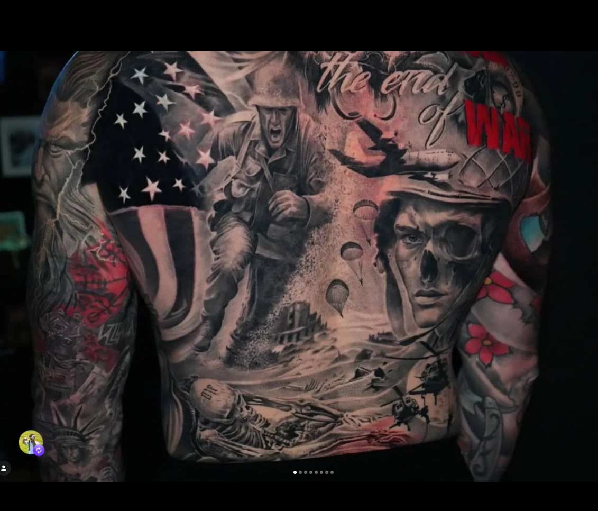

RELIQUARY
A private tattoo parlour
&
sacred portraiture studio
by Isaac Roque.

“ A piece worth carrying for fifty years is worth drawing for fifty hours. — I. R.
Isaac
Roque
Isaac Roque has been hand-drawing faces since long before they ended up on skin. He builds his work the way iconographers built saints — slow, contemplative, in graphite first.
Reliquary opens with a single chair. Black and grey realism, fine line, dotwork ornament, and Baroque-leaning portraiture are the house language. The work is moody on purpose. It is meant to be looked at over a lifetime, not a feed.
- 12+ Years tattooing in the Midwest
- 1 Client per chair, per day
- ∞ Drafts before a needle is loaded
Selected
Works
A private collection of recent pieces. Click a relic to read its inscription.
Visit
Reliquary
By appointment, in the West Central
neighbourhood of Fort Wayne, Indiana.
Address shared on confirmation.
Tuesday — Saturday
Noon · until · Late
Closed Sunday & Monday for drawing.
isaac@reliquary.studio
Replies within 48 hours · weekdays.
@isaacroque_tattoo
Most recent work. Stories Mon · Wed · Fri.
Request a
Sitting
The chair is open by application. Tell us what the piece is for. We respond personally within two working days.